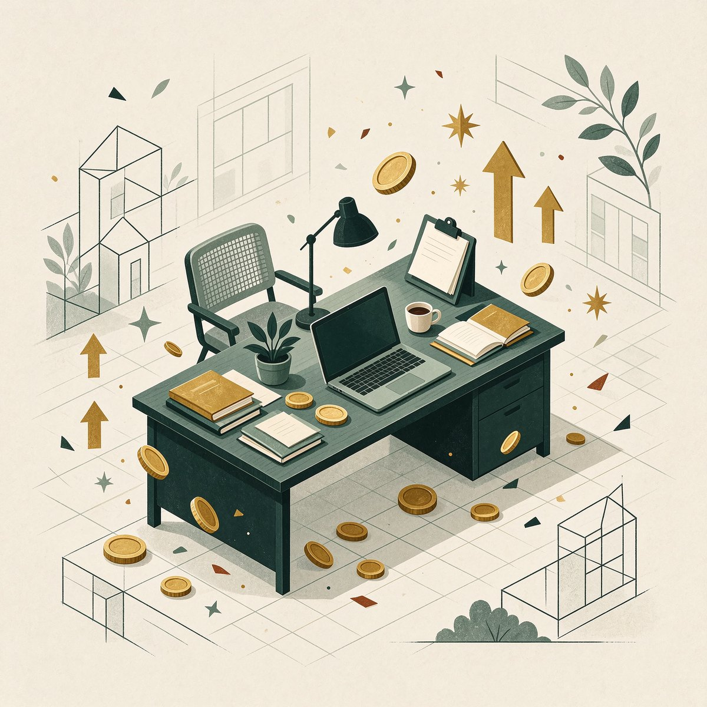

MONEY PERSONA

隐藏搞钱体质
测一测，你的隐藏搞钱体质是什么
凭你的职场小习惯，揭秘你的真实搞钱人设
职场百态
｜你是反卷先锋还是老黄牛
搞钱雷达
｜测测你的副业潜力值
消费心理
｜你的钱都花哪了
隐藏体质
｜解锁你的专属财富画像
点击测试
本测试仅为趣味娱乐，不具备财务规划建议，结果仅供参考。
本测试为原创趣味互动，不构成任何财务、职业规划建议。
01 / 32
← 上一题
你的搞钱人设
趣味指数
01
工作状态
02
搞钱体质
03
消费习惯
04
隐藏一面
05
适合你的搞钱路子
本测试为原创趣味互动，不构成任何财务、职业规划建议。
重新测试
回到首页